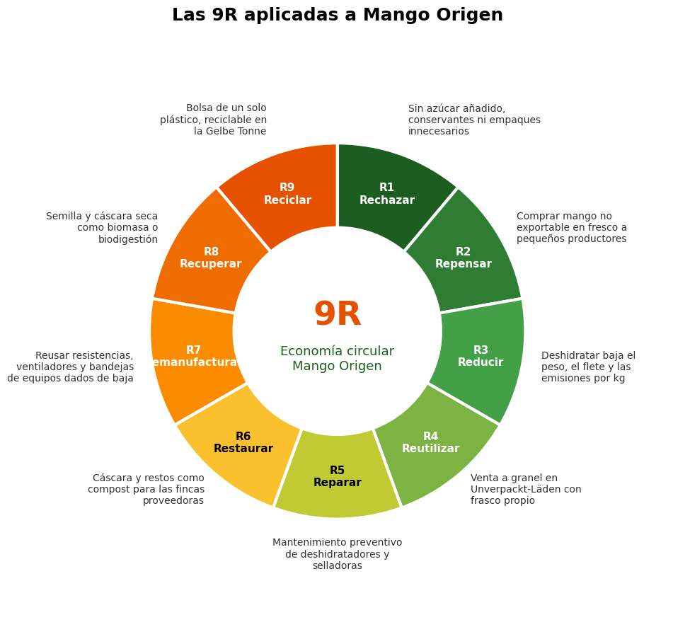

COMPETITIVIDAD, INNOVACIÓN Y ENTORNO
Colombia frente a Alemania
Con estos rankings vemos de qué lado tenemos ventaja y cuál es el reto de exportar desde Colombia a un país tan exigente.
| Indicador | Alemania | Colombia | Interpretación |
|---|---|---|---|
| IMD World Competitiveness Ranking 2026 (Valora Analítik; blue News) | Puesto 23 de 70 | Puesto 59 de 70 | Alemania sigue teniendo buena infraestructura de distribución. Colombia es débil en gobierno e infraestructura. |
| Global Innovation Index 2026, OMPI (DPMA; WIPO) | Puesto 11 de 139; fuerte en capital humano e investigación | Puesto 78 de 139 (puntaje 28,6) | El consumidor alemán está acostumbrado a productos con innovación en empaque y trazabilidad. |
| B-READY, Banco Mundial (Analdex) | Sin dato en las ediciones consultadas | 5.º en regulación, 9.º en servicios públicos, 23.º en eficiencia operativa y 37.º en comercio internacional, entre 50 economías. | Hay que tramitar VUCE, INVIMA y EUR.1 con anticipación. |
| UNIDO CIP (UNIDO; OCDE) | 1.º del mundo | Puesto 69 (2015) | Alemania es potencia industrial y sus compradores exigen estándares industriales (IFS Food, BRCGS). |
| World Bank Data (WorldCountryData con datos BM; Destatis) | Población 83,6 millones (2026); PIB per cápita US$65.699 (2026); inflación 2,8 % (2026) | Población 54,1 millones (2026); PIB per cápita US$10.726 (2026); inflación 6,29 % (2026) | Mercado grande, con poder adquisitivo alto y precios estables. |
Cómo lo leemos: Alemania está muy arriba en todos los rankings y Colombia bastante abajo. Esto significa que el comprador alemán va a esperar estándares industriales y trazabilidad, y que nosotros tenemos que cumplirlos aunque nuestro entorno no ayude. También que la logística y los trámites en Colombia piden tiempo extra.
Fuentes: IMD (2026), OMPI (2026), Banco Mundial, UNIDO y World Bank Data, citadas en cada fila. Consulta: 8 de noviembre de 2026. La edición de UNIDO para Colombia es de 2015.
MERCADOS VERDES Y SOSTENIBILIDAD
Qué espera el mercado verde alemán
Alemania es de los países más exigentes del mundo en medio ambiente y tiene el mayor mercado orgánico de Europa. Para Mango Origen esto es un requisito de entrada al segmento premium.
Indicadores
| Indicador | Alemania | Colombia | Interpretación |
|---|---|---|---|
| Environmental Performance Index (Yale, 2026; EPI 2024) | 2026: puesto 6 de 177. 2024: puesto 3 de 180 (74,6) | 2024: puesto 63 de 180 (49,4). Falta verificar el dato 2026 en epi.yale.edu. | El comprador alemán espera pruebas ambientales. Colombia no tiene esa imagen por sí sola, así que la marca tiene que demostrarla. |
| Green Growth Index (GGGI) | Entre los pocos países con puntaje de 70 o más | 50,77 (moderado); 6.º de América; muy alto en protección de capital natural (75,72), bajo en oportunidades económicas verdes (32,37). | Colombia tiene biodiversidad pero poca oferta verde para exportar. Ahí hay un nicho para productos como el nuestro. |
| Mercado orgánico alemán (BÖLW, 2025) (Lebensmittel Praxis; cash.ch) | €18.230 millones, +6,7 % frente a 2024. El bio es el 6,5 % del mercado de alimentos; +6 % en el primer trimestre de 2026. | - | El segmento bio crece más rápido que la inflación. La certificación orgánica abre la puerta a dm, REWE Bio y tiendas especializadas. |
Cómo lo leemos: Alemania tiene fama ambiental y un mercado bio de €18.230 millones que sigue creciendo. Colombia no tiene esa fama de entrada, así que tenemos que probar lo que decimos con certificados. Si lo logramos, el nicho existe.
Estándares y normas que aplican
Revisamos el Standards Map, las normas ISO y la normativa de la UE.
| Estándar | Qué exige | ¿Obligatorio? | Uso en Mango Origen |
|---|---|---|---|
| Orgánico UE (Reglamento (UE) 2018/848) | Cultivo sin agroquímicos de síntesis, certificadora reconocida y certificado de inspección en TRACES. | Solo para vender como «Bio» | Meta de mediano plazo; abre el segmento premium. |
| IFS Food o BRCGS | Inocuidad y calidad en la planta. | De hecho sí: lo piden las cadenas alemanas | Requisito de la planta deshidratadora. |
| GlobalG.A.P. | Buenas prácticas en la finca. | Lo piden muchos compradores | Para los productores de mango. |
| Fairtrade / Naturland | Comercio justo y criterios sociales. | Voluntario | Diferenciador frente al mango africano. |
| ISO 22000 / ISO 14001 | Gestión de inocuidad / gestión ambiental. | Voluntario | ISO 14001 respalda el discurso ambiental con evidencia que se puede auditar. |
| Reglamento de envases PPWR (UE) 2025/40 y registro LUCID (Alemania) | Envases reciclables; registro antes del primer envío; multas de hasta €200.000. | Sí | Cambiar a doypack monomaterial reciclable (PP o PE). |
Propuesta verde, con evidencia y límites
Aplicamos las 9R de la economía circular al producto. En la tabla dejamos las acciones donde sí hay evidencia, y a cada una le pusimos su límite.
| Acción (9R) | Evidencia que la respalda | Límite honesto |
|---|---|---|
| R1 Rechazar: sin azúcar añadida ni conservantes | El consumidor alemán decide por «ohne Zuckerzusatz» y por el sello Bio. | Esto es un beneficio de salud, no ambiental. No hay que decir «eco» por esto. |
| R2 Repensar: comprar a pequeños productores con precio justo | Fairtrade y Naturland lo valoran. | Certificar cuesta y tarda. Al inicio solo podemos decir «comercio directo». |
| R3 Reducir: deshidratar evita desperdicio de fruta fresca y baja el peso del flete | Se transporta un producto liviano y estable, sin cadena de frío. | La deshidratación gasta energía y hay que medirla. |
| R8 Recuperar: cáscaras y semillas a compost o biomasa | UNEP promueve la economía circular en alimentos. | Necesita un aliado local y todavía no está contratado. |
| R9 Reciclar: empaque monomaterial reciclable | Es obligatorio con el PPWR desde agosto de 2026. | Pierde algo de barrera frente al laminado de aluminio. Hay que probar la vida útil. |

Regla de comunicación: no vamos a usar «eco», «verde» ni «carbono neutral» sin tener el certificado. La UE sanciona las afirmaciones ambientales sin prueba (greenwashing).